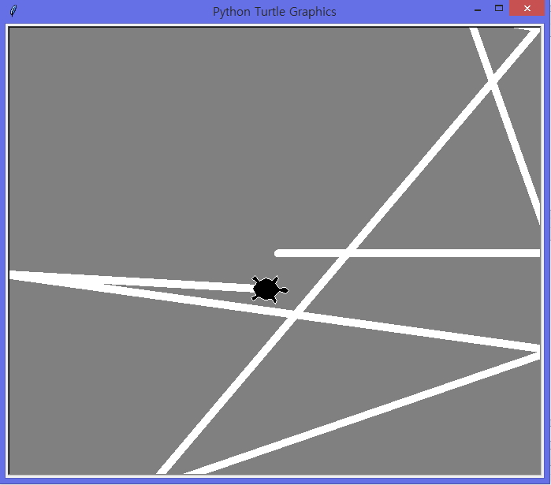

인터렉티브 셸에서 명령이나 코드만 입력하고 있으면 따분하다.
이럴 때에는 파이썬으로 그림을 그리며 학습할 수가 있다.
turtle 모듈을 사용해 거북이를 조종하는 방법을 배우면서 문법을 익히고 심화학습 할 수 있는 일석이조의 효과를 가진다.
로봇 청소기는 벽을 만나면 방향을 바꿔서 다시 나아간다. 이와 같은 동작을 실현하려면 어떻게 해야할까?

cleaner.py
import turtle
import math
import random
class Line:
def __init__(self, slp, x0, y0):
self.slp = float(slp)
self.x0 = float(x0)
self.y0 = float(y0)
def get_y(self,x):
return self.slp * (x - self.x0) + self.y0
def get_x(self,y):
return self.x0 + (y - self.y0) / self.slp
class Geobuk(turtle.Turtle): #거북이 생성
def __init__(self):
super(Geobuk, self).__init__()
self.shape('turtle')
self.shapesize(2, 2)
self.radians()
self.width(10)
self.getscreen().bgcolor('gray') #배경의 색을 회색(청소 전)
self.pencolor('white') #거북이의 움직임을 하얀색(청소 후)
def hit_wall(self): #벽에 부딪혔을 때의 처리
xx = 350 #벽의 크기를 설정한다.
yy = 300
line = Line(math.tan(self.heading()), self.xcor(), self.ycor())
rand_angle = math.pi * random.random()
if self.towards(-xx, yy) > self.heading() >= self.towards(xx, yy): #위쪽 벽에 닿았을 때의 처리
des_x = line.get_x(yy)
des_y = yy
turn_angle = self.heading() + rand_angle
elif self.towards(-xx, -yy) > self.heading() >= self.towards(-xx, yy):#왼쪽 벽에 닿았을 때의 처리
des_x = -xx
des_y = line.get_y(-xx)
turn_angle = self.heading() - 0.5 * math.pi + rand_angle
elif self.towards(xx, -yy) > self.heading() >= self.towards(-xx, -yy):#아래쪽 벽에 닿았을 때의 처리
des_x = line.get_x(-yy)
des_y = -yy
turn_angle = self.heading() - rand_angle
else: #오른쪽 벽에 닿았을 때의 처리
des_x = xx
des_y = line.get_y(xx)
turn_angle = self.heading() - 0.5 * math.pi - rand_angle
self.goto(des_x, des_y) #벽에 닿을 때 까지 이동
self.right(turn_angle) #회전해서 안쪽으로 방향을 돌림,시계방향으로 회전한다.
def run(self):
while True:
self.hit_wall()
geobuk = Geobuk() #청소로봇의 인스턴스 geobuk를 생성
geobuk.hit_wall() #hit_wall 메소드를 여러번 실행
geobuk.hit_wall()
geobuk.hit_wall()
geobuk.run() #시작